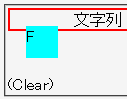
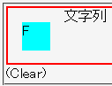

内部にフロートを含む相対配置要素は、ボックスサイズを算出する際にフロートのボックスサイズを除外しない。
<div style="position:relative; border:2px solid red;"> <div style="float:left; width:2em; height:2em; margin:1em; background:aqua;">F</div> 文字列</div> <div style="clear:left;">(Clear)</div>
フロートは親要素のサイズの算出に影響を与えないはずです。
Opera6.06での表示
N7.02での表示